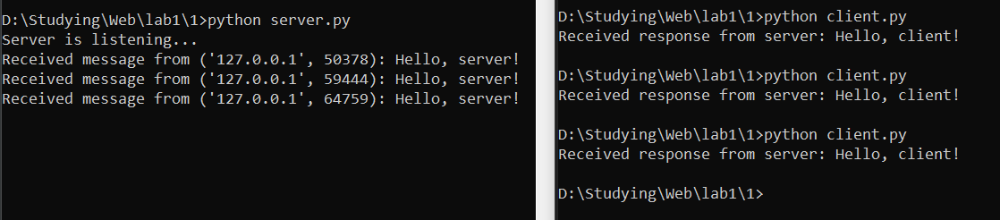

Задание: реализовать клиентскую и серверную часть приложения. Клиент отсылает серверу сообщение «Hello, server». Сообщение должно отразиться на стороне сервера. Сервер в ответ отсылает клиенту сообщение «Hello, client». Сообщение должно отобразиться у клиента. Обязательно использовать библиотеку socket. Реализовать с помощью протокола UDP.
Листинг кода сервера:
import socket
from config import HOST, SERVER_PORT, BUFF_SIZE
if __name__ == '__main__':
server_address = (HOST, SERVER_PORT)
with socket.socket(socket.AF_INET, socket.SOCK_DGRAM) as conn: # UDP
conn.bind(server_address)
print('Server is listening...')
while True:
data, client_address = conn.recvfrom(BUFF_SIZE)
print(f'Received message from {client_address}: {data.decode("utf-8")}')
message = 'Hello, client!'
conn.sendto(message.encode('utf-8'), client_address)
Листинг кода клиента:
import socket
from config import HOST, SERVER_PORT, BUFF_SIZE
if __name__ == '__main__':
server_address = (HOST, SERVER_PORT)
conn = socket.socket(socket.AF_INET, socket.SOCK_DGRAM) # UDP
message = 'Hello, server!'
try:
conn.sendto(message.encode('utf-8'), server_address)
response = conn.recv(BUFF_SIZE)
print(f'Received response from server: {response.decode("utf-8")}')
except ConnectionResetError:
print("Server not avaliable, try again later")
conn.close()
Скринкаст:
Клиент-серверное взаимодействие:

Клиентская сторона, когда сервер недоступен (аналогичная логика реализована во всех остальных заданиях):